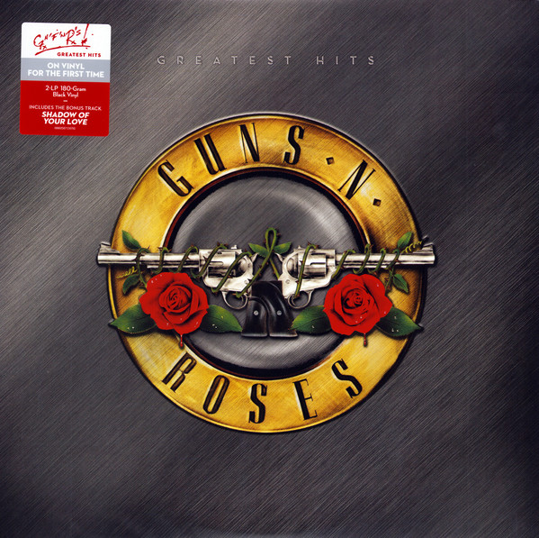
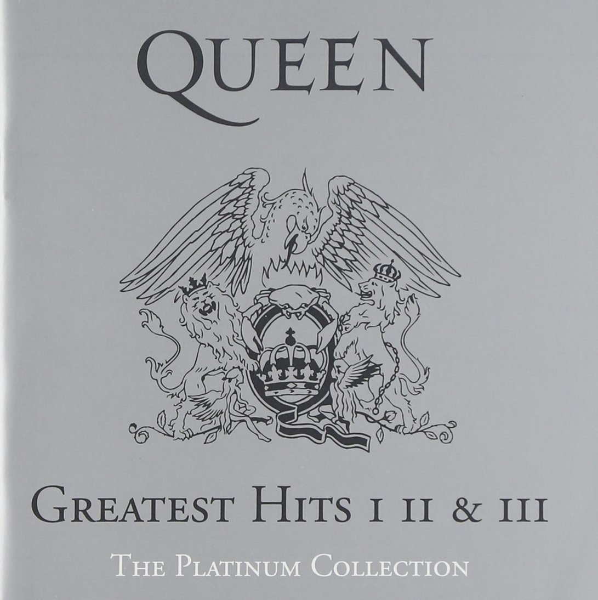
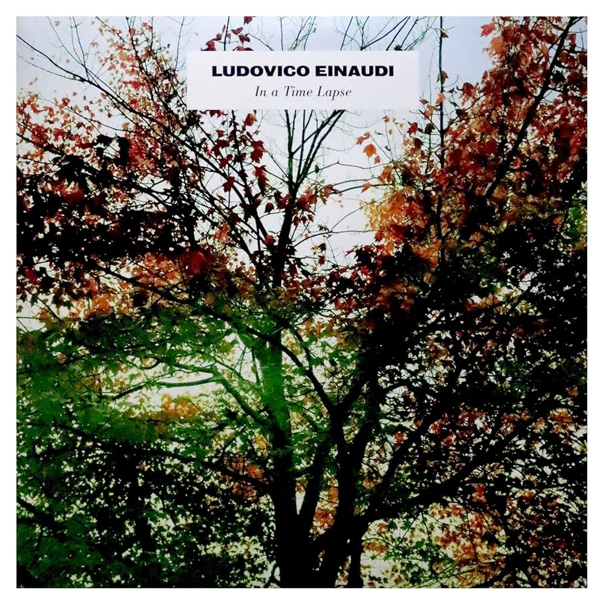
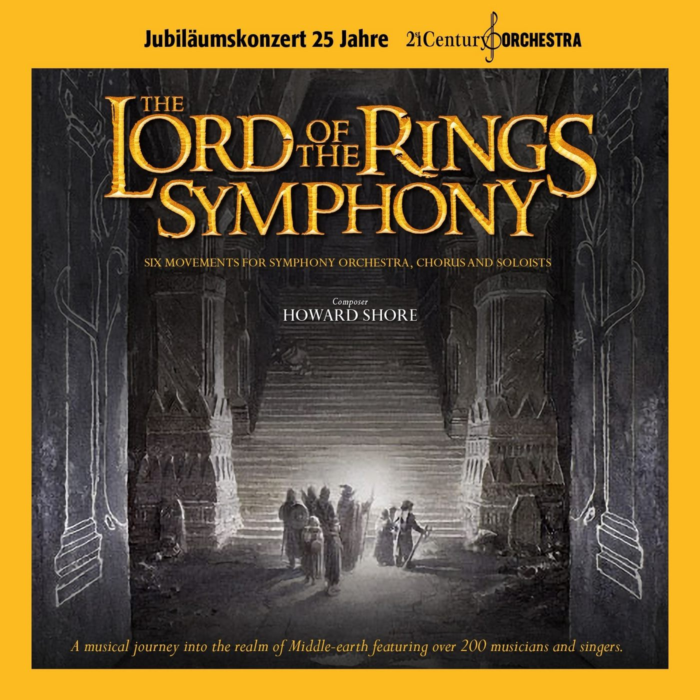

> Profile_
Mariana
> Name: Mariana_
> Age: 36_
> Status: Student_
> Location: CABA, Argentina_
~/{ Software Dev & Data Science Student }
Combinando mi visión analítica de la psicología con la lógica de los datos y el código. Enfocada en la automatización con Python, el manejo de bases de datos y la resolución de problemas mediante un enfoque sistemático. Busco crear soluciones web escalables y eficientes.
> Habilidades_
~/{ Core_Stack }
- HTML5
- CSS3
- JavaScript
- C#
- Python
- MySQL
~/{ Learning_Path }
- Kotlin
- React
- Java
- Machine Learning ML
> Películas Favoritas_


The Matrix
Un hacker descubre la verdad sobre la realidad y su papel en la guerra contra las máquinas. Revolucionó el cine de ciencia ficción con su propuesta visual y filosófica.
> Discos Favoritos_
Greatest Hits
Recopilación esencial con los mayores éxitos del hard rock de la banda, en una selección de 14 temas.

The Wall
Ópera rock conceptual que explora el aislamiento, la alienación y la opresión en una obra maestra atemporal.

Greatest Hits
Colección legendaria con los himnos de rock más icónicos de todos los tiempos.

In a Time Lapse
Composiciones instrumentales y neoclásicas que evocan emociones profundas.

The World of H.Z.
Arreglos sinfónicos espectaculares de sus mejores bandas sonoras cinematográficas.
The LOTR Symphony
Viaje musical épico que captura la magia, tensión y grandeza de un viaje por la Tierra Media.
